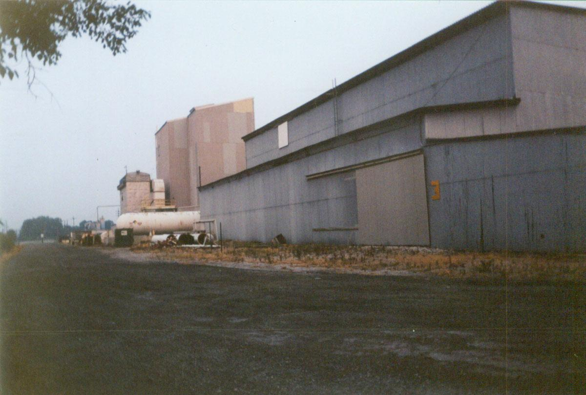

Good Things Can Happen!
(Just Not Very Often At All)
They say to give the good news first--and I think that's a good idea in this case, especially when I have the wonderful opportunity to admit that I was completely wrong. What I said happened didn't happen at all, and some really unfortunate damage has been repaired by some very diligent and capable people.
You see, my last update reported that Woodland Cemetery's premiere ghostly resident, Johnny Morehouse, had suffered an unfortunate bit of vandalism on his tombstone. Just the sight of his faithful dog's missing head was enough to make any cemetery fan's heart ache.
Well, apparently no one actually sawed the head off Johnny's wonderful dog. According to a source who visited Woodland this past week and got the inside scoop from workers there, the culprit was simply time and weathering. The head just fell off, they say. Naturally, this will most likely be added to the list of ghostly occurrences attributed to this little boy, who died so long ago he never even saw an electric light. Or, more likely, one of the other ghosts, who may be jealous of Johnny's star status and choice placement near the front gates. (This is just a guess--I haven't actually heard this rumor yet--but I think it's a pretty good one. Ghost stories have a way of self-replicating like that.)
But the bottom line is this: Johnny Morehouse's dog has his head back; no one actually cut it off; and all is right with the world. I'm glad to be able to report something constructive, rather than the demolition of yet another beautiful historic place. And here's the skillfully restored grave marker, photographed by the same generous contributor:
Which brings me to the sad story of Chippewa Lake, our state's last great abandoned amusement park, which seems to finally be meeting the bulldozers and wrecking balls even as I write these words. I think we all know what a loss this is; I certainly hope whatever new bland suburb they put in its place has as much history, character, and atmosphere as a century-old fun park with a complete roller coaster track and a ferris wheel with a tree growing up through the middle of it.
If you'd like to really explore Ohio's forgotten amusement park history, I suggest a visit to my old friend Rookie's definitive website on the topic, SBNO: Standing But Not Operating. He knows them all and commemorates them with flair, from the parks that closed long before any of us were born to Idora Park, which bit the dust right before I started this website.
I want to thank Tim Chrismer of Columbus for identifying this building for me, after all these years of having a stack of photos from my exploration of the place and not knowing how to post them in a new section on the website. Here's the run-down building on Columbus's East Fifth Avenue, near Hamilton Road and the airport, which turns out to be Agri-Care Fertilizer Manufacturing, in the words of Mr. Chrismer:
The property has been owned by Vigoro Industries (aka Royster-Clark, aka Crop Production Services, etc.) - an agriculture products company - since they purchased it from Agri-Care Inc. in 1994. Its use was listed by the EPA as "Fertilizer (Mixing Only) Manufacturing" in 2000 (which is the last year that was reported), but that seems strange if you saw grain in the buildings. I would have guessed that it was a transfer station to load grain on to railroad cars.

Agri-Care Fertilizer Manufacturing
Currently Owned by Viggoro Industries, aka Royster-Clark
A fully photographed exploration of this dusty old place is forthcoming. But for now, I have to ask for your help once again to tell me what the heck a certain place is; that's right, it's another installment of...
NAME THAT BUILDING
Tall Concrete Silo-Type Structure with Associated Buildings
East Main Street, just west of Alum Creek Drive - Columbus, OH
Okay, everyone...I need you yet again. This time it's to help me identify both this structure in particular, and then more generally, what exactly these damn things are. Because you see them all over the place, and I've never been able to do any better than comparing them to a giant concrete grain mill. Pretty lame, huh? I've even heard it suggested that they store salt in these towering joined-cylinder things; for all I know for sure, this is as likely a possibility as any.
The way to get onto it is to hop the very hoppable fence, then climb a never-ending rusty ladder. The ladder is so long it stops periodically and jogs to one side, then the other. (I suppose this is to make sure a fall would only knock all your teeth out on the metal ribs and rungs, break your legs and arms as they caught on the way down, and then shatter your skull on impact with the platform grate. You know, safety.) Once you're about halfway to the top you realize that, 1., you might not have the strength to climb another mile of filthy old ladder; and 2., that ladder is all one piece and it's hugging the sheer concrete face of the structure, which means it's all too easy to picture the ladder itself pulling out of its bolt-holes and dropping you all the way down in your nice rusty metal cage.
But that's for when I post my full section about this building, which I explored with my friend Hoss way back in the spring of 2000 but I still see many days and know is essentially the same. It occupies a curious position in Columbus geography: just a few hundred feet on the ghetto side of the most clearly-delineated rich/poor border in town, where Bexley (home of many of the city's richest folks, including the mayor and the governor) ends at Alum Creek Drive, and the bad
I know I've said it before, but you can count on a new update in the very near future. (Go ahead and laugh--I would.) It's true. I've got new hauntings to report from all over the state, an exploration or two to post, and information about Halloween-era media appearances I'll be doing. So I'll post a new update in just a few days--really.
And I can't let this update go without mentioning what a great and historic election we're on the brink of. The polls are looking absolutely beautiful, for a change, and I don't even think it's going to be close--except in states like Ohio, which is still a crucial one with lots of pull in the Electoral College. So...don't forget to vote! Be able to tell your grandkids you were a part of this long-overdue presidential victory.
I am reading:
Oh, the books I've read. Have I mentioned that I read while I brush my teeth, and had to be forced to stop reading while I drive? But I'm not the only drive-reader in the world. (I'm looking at you, Colleen.) Mostly I've read nonfiction about political theory, with one book in particular holding my interest right now, but I've also made my way through six short story anthologies, including The Best of Cemetery Dance, Shadows of Lovecraft, and the 2007 and 2008 editions of O. Henry Award Short Stories. The following are the ones I have finished very recently or am working on as of right now.
FICTION - The Lovely Bones, by Alice Sebold
Foundations of Fear, edited by David Hartwell
Winterwood, by Patrick McCabe
Zombie, by Joyce Carol Oates
NONFICTION - A Million Little Pieces, by James Frey
Moral Politics: How Liberals and Conservatives Think, by George Lakoff
Why We Read What We Read, by Lisa Adams and John Heath
A People's History of American Empire, by Howard Zinn